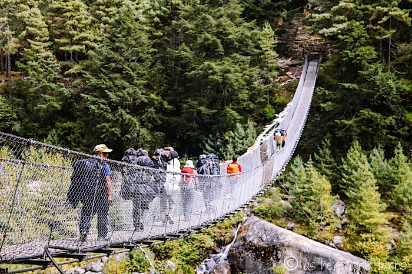
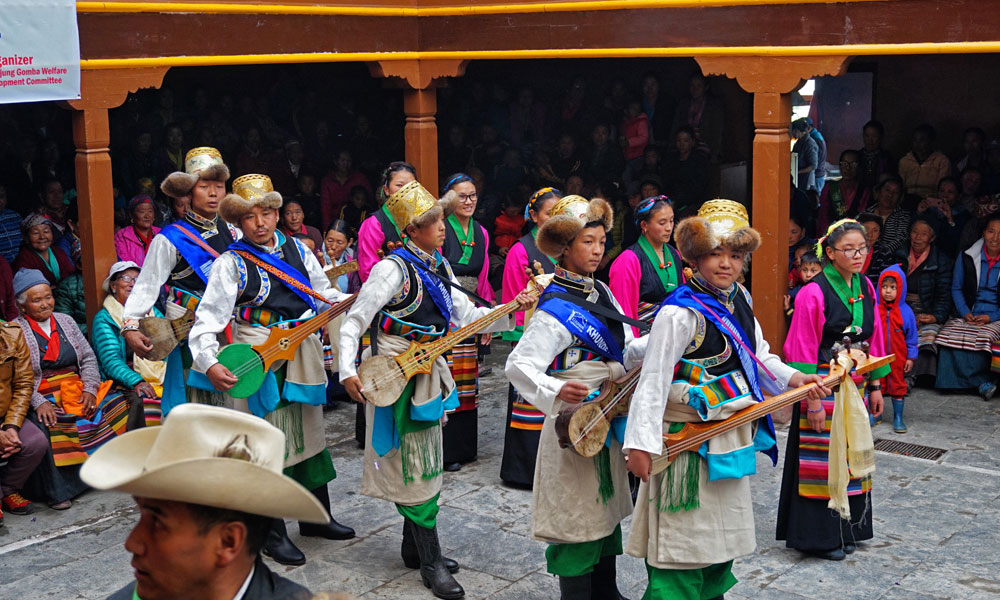

There are journeys that change us, and then there are journeys that transform us entirely. The trek to Everest Base Camp is undoubtedly the latter. Standing at 5,364 meters above sea level, at the foot of the world's highest mountain, is not just about conquering altitude—it's about discovering what you're truly capable of.

The Call of the Mountains
Every great adventure begins with a single decision. Mine started on a rainy Tuesday afternoon, scrolling through photographs of snow-capped peaks and prayer flags fluttering in the mountain wind. The Everest Base Camp trek had been on my bucket list for years, but like many dreams, it remained just that—a dream deferred by the obligations of daily life.
But something shifted that day. Perhaps it was the realization that life is too short to postpone the experiences that call to our souls. Or maybe it was simply time. Whatever the catalyst, I found myself booking flights to Kathmandu three months later, with a mixture of excitement and trepidation coursing through my veins.
"The mountains are calling and I must go." — John Muir
The preparation phase was intense. I spent countless hours researching, training, and gathering gear. Running stairs with a weighted backpack became my new morning routine. I learned about altitude sickness, studied the itinerary until I could recite it backwards, and joined online forums where I absorbed wisdom from those who had already made the journey.
Into the Khumbu: Days of Wonder and Discovery
The Gateway: Lukla to Namche Bazaar
The adventure truly begins with the flight to Lukla, often described as one of the world's most dangerous airports. As our small aircraft descended toward the mountain runway, my heart pounded with a mixture of fear and exhilaration. The landing was smooth, despite the airport's notorious reputation, and stepping onto the tarmac felt like crossing a threshold into another world.
The first days of trekking were deceptively gentle. We walked through lush forests of rhododendron and pine, crossed swaying suspension bridges over turquoise rivers, and passed through small villages where life moved at the pace of the mountains themselves. The trail to Namche Bazaar, however, was our first real test—a steep ascent that left my legs burning and lungs gasping for air.

Namche Bazaar, the bustling heart of the Khumbu region, sprawls across a horseshoe-shaped mountainside at 3,440 meters. This colorful town serves as an acclimatization stop, giving our bodies time to adjust to the thinning air. We spent our rest day hiking to the Everest View Hotel, where we caught our first glimpse of Everest itself—a distant white pyramid touching the sky.
Higher Ground: Tengboche to Dingboche
As we climbed higher, the landscape transformed. The forests thinned and eventually disappeared, replaced by alpine meadows and rocky terrain. The air grew noticeably thinner, and each step required more conscious effort. Yet with each meter of elevation gained, the views became more spectacular.
Tengboche Monastery, perched at 3,867 meters, stands as one of the spiritual highlights of the trek. We arrived in time for evening prayers, the deep resonance of monks chanting filling the temple while Ama Dablam, one of the world's most beautiful mountains, glowed golden in the setting sun outside the windows.
The Thin Air: Confronting Limits and Finding Strength
The reality of high-altitude trekking hit me hardest around Dingboche. At 4,410 meters, even simple tasks like tying shoelaces or climbing stairs to the teahouse dining room left me breathless. The nights were the worst—sleeping became difficult, my body working overtime to adapt to the reduced oxygen levels.
This is where the mental game truly begins. Physical preparation can only take you so far; the rest is about mental resilience, patience, and listening to your body. Our guide's mantra became our creed: "Pole, pole" (slowly, slowly in Swahili). Speed didn't matter. What mattered was putting one foot in front of the other, breathing deeply, and trusting the process.

Dealing with Altitude
Altitude sickness doesn't discriminate. It can affect anyone, regardless of fitness level. The key is recognizing symptoms early: headaches, nausea, dizziness, and difficulty sleeping. Our group had daily health checks—our guide monitoring our oxygen saturation and heart rate, ensuring everyone was acclimatizing properly.
Two members of our group had to descend due to altitude-related issues. There's no shame in turning back—the mountain will always be there, but you only get one body.
The Final Push: Lobuche to Base Camp
The day we set off for Everest Base Camp began at 4 AM. We needed to reach Gorakshep first, drop our main packs, and then make the final push to base camp—a round trip that would take 7-8 hours at high altitude. The pre-dawn cold was bone-chilling, but excitement kept us warm as we hiked by headlamp.
The landscape at this elevation is otherworldly. The Khumbu Glacier stretches like a frozen river of ice and rock, its surface a chaotic jumble of ice pinnacles and deep crevasses. Prayer flags appeared more frequently, their colors faded by sun and wind, carrying prayers into the mountain air.
And then, after hours of steady climbing, we were there. Everest Base Camp. A collection of tents and prayer flags at the foot of the Khumbu Icefall, with Everest itself looming above—not fully visible from this angle, but undeniably present. The emotion was overwhelming. Some in our group cried. Others sat in silent contemplation. I stood there, trying to absorb every detail, to imprint this moment forever in my memory.
Lessons from the Roof of the World
The Power of Community
One of the unexpected gifts of this journey was the people. Our small group of trekkers, initially strangers from different corners of the world, became a tight-knit family. We supported each other through difficult days, celebrated small victories, and shared meals in cold teahouses while swapping stories.
The Sherpa people, whose homeland we were privileged to walk through, taught us about resilience and grace. Their strength, both physical and spiritual, is humbling. Watching a porter carry twice his body weight up steep mountain paths, or seeing the quiet dignity with which families maintain teahouses at impossible elevations, puts our own challenges in perspective.
Finding Peace in Discomfort
Modern life insulates us from discomfort. We have climate control, endless entertainment, and immediate access to almost anything we need. The trek strips all of this away. You're cold, tired, and sometimes hungry. Your body aches. The accommodations are basic. Yet in this simplicity, there's a profound clarity.
Without the distractions of everyday life, you're left with yourself— your thoughts, your limits, your true nature. I found that most of my suffering came not from the physical challenges, but from my mind's resistance to them. Once I accepted discomfort as part of the experience rather than something to fight against, everything became easier.
"It is not the mountain we conquer, but ourselves." — Sir Edmund Hillary
The Beauty of Slow Travel
In an age of instant gratification, the Everest Base Camp trek is gloriously slow. You can't rush it. You can't skip sections or take shortcuts. You must walk every step, breathe every breath, earn every meter of elevation. This enforced slowness allows you to truly see— the way light plays on mountain peaks, the intricate patterns of lichen on rocks, the smile of a child in a remote village.

Your Turn: A Practical Guide for Future Trekkers
When to Go
The trekking seasons are non-negotiable. Spring (March to May) and autumn (September to November) offer the most stable weather and clear views. I trekked in October, and while it was cold, especially at higher elevations, the crystal-clear skies and perfect visibility made it worth every shiver. Winter treks are possible but extremely cold, while monsoon season (June to August) brings clouds, rain, and the possibility of leeches at lower elevations.
Physical Preparation
You don't need to be an elite athlete, but you should be comfortable with sustained physical activity. I recommend a training program that includes:
- Regular hiking with a weighted backpack (10-15kg)
- Cardiovascular exercise 4-5 times per week
- Leg and core strengthening exercises
- Practice hiking for 5-6 hours at a time
Start training at least three months before your trek. Your future self will thank you when you're climbing that seemingly endless hill to Namche Bazaar.
What to Pack
Packing for Everest Base Camp is an art form—you need enough to stay warm and safe, but not so much that you're carrying unnecessary weight. Essential items include:
- A good quality sleeping bag rated to -15°C
- Layered clothing system (base layers, insulation, waterproof shell)
- Broken-in hiking boots and several pairs of wool socks
- Down jacket (many companies provide rentals in Kathmandu)
- Sun protection: high SPF sunscreen, sunglasses, and lip balm
- Water purification tablets or filter
- Basic first aid kit and any personal medications
- Headlamp with extra batteries
- Trekking poles (invaluable for descents)
Insider Tips
- Bring wet wipes: Showers become increasingly rare as you go higher, and wet wipes are a blessing.
- Pack a book or Kindle: Evenings at teahouses can be long, especially during rest days.
- Bring snacks from home: Energy bars, chocolate, and favorite treats provide both calories and morale boosts.
- Download offline maps: GPS still works even without cell service.
- Tip generously: Your guides and porters work incredibly hard in difficult conditions.
Choosing a Trekking Company
While it's possible to trek independently, I highly recommend going with a reputable trekking company. A good guide provides not just navigation, but local knowledge, safety oversight, and cultural context that enriches the entire experience. Look for companies that:
- Have established safety protocols and experienced guides
- Provide fair wages and working conditions for staff
- Include comprehensive travel insurance coverage
- Have positive reviews from multiple independent sources
- Are transparent about what's included in the package price
The Cost Reality
Budget for the trek varies widely depending on the level of service. Expect to pay anywhere from $1,200 to $2,500 for a guided trek, including domestic flights, permits, accommodation, meals, and guide services. Additional costs include international flights, travel insurance, gear, tips, and spending money for drinks and souvenirs.
Remember: the cheapest option isn't always the best. Companies cutting corners often do so at the expense of guide wages or safety standards. Pay fairly for quality service, and you're investing in both your safety and the local economy.
The Return: Carrying the Mountains Home
Descending from base camp was bittersweet. After all the anticipation and effort to get there, leaving felt too soon. But the journey down offered its own rewards—the ability to breathe deeply again, to walk without gasping for air, to feel your body recovering its strength.
The final morning, flying out of Lukla, I pressed my face against the airplane window, watching the mountains recede. I thought about how much had changed in just two weeks. I was the same person who arrived, yet fundamentally different. The trek had stripped away layers of self-doubt, revealing a core of resilience I didn't know I possessed.

Back in Kathmandu, sipping coffee at a café with wifi and hot showers, the trek already felt like a dream. But the lessons remained real. The patience learned in thin air. The gratitude for simple comforts. The knowledge that our limits are often self-imposed. The understanding that sometimes, to find ourselves, we need to get lost in something bigger than ourselves.
The Everest Base Camp trek is not easy. It's not always fun. There will be moments when you question your decision to undertake it. But I promise you this: standing at the foot of the world's highest mountain, having walked every step of the way there, you'll understand why people return from this journey forever changed.
The mountains have a way of putting life in perspective. They remind us that we're small, yet capable of remarkable things. They teach us that the path to extraordinary experiences is often uncomfortable, but always worth it. They show us that nature, in its raw and unfiltered form, is the greatest teacher we'll ever have.
So if you're sitting there, scrolling through photos of prayer flags and snow-capped peaks, feeling that pull toward the Himalayas—listen to it. Start planning. Begin training. Book that flight. The mountains are calling.
And when you finally stand at Everest Base Camp, breathing thin air and feeling on top of the world despite being at its base, you'll understand. Some journeys aren't about the destination at all. They're about who we become along the way.